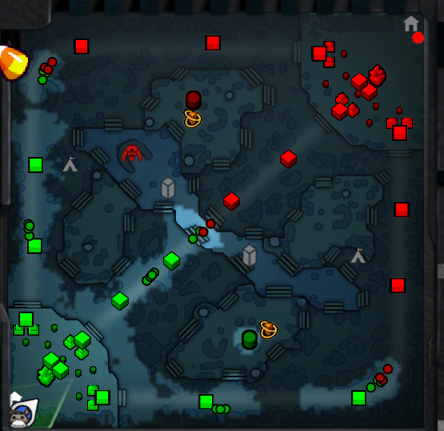
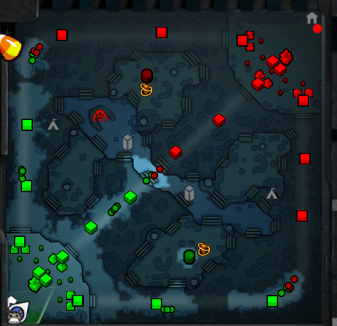

Carte du jeu :


Voici la carte du jeu telle qu'elle est actuellement car certaines mises à jour provoquent des modifications à la carte afin de garantir un équilibre entre les 2 factions du jeu,
le radiant en vert et le dire en rouge. En plus des deux factions du jeu, des créatures neutres apparaissent dans des zones réservées. Tuer ces dernière octroie un nombre d'or et d'expérience
qui dépend du monstre tué. Il y a 8 zones de chaque côté de la carte soit 16 au total.
Au centre de la carte coule une rivière qui sépare le territoire de base des deux factions, au centre de cette dernière se trouve un antre qui sert de refuge à un boss qui si tué donne un objet
qui permet de revenir à la vie si tué.
Il y a 3 chemins sur la carte chaque faction possède 3 tours ainsi que 2 casernes sur chacun d'entre eux. Toutes les 30 secondes, des créatures controlées par l'IA qui descendent les chemins et attaquent tout ennemi en chemin apparaissent.
Détruire une tour octroie de l'or et permet de s'attaquer à la prochaine, autrement, elle est invulnérable. Détruire les casernes permet d'améliorer les statistiques de vos créatures.
Une fois les 2 dernières tours détruites, l'ancient est exposé et vous n'avez plus qu'à le détruire pour remporter la victoire.
Pour récompenser les équipes qui contrôlent certaines zones clés, des runes apparaîtront, les ramasser octroie des bonus comme de l'or, une vitesse accrue, des dégats doublés, etc ...